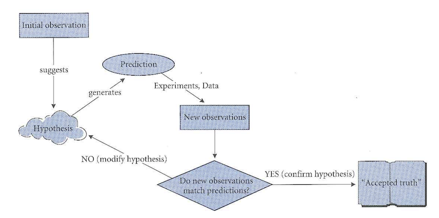
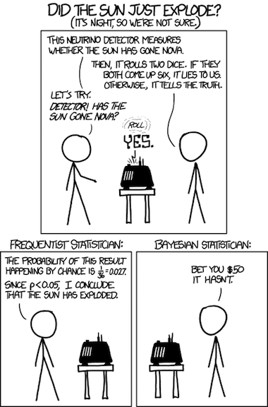

Hypothesis Testing
Induction versus Deduction
Inductive reasoning is the “bottom-up” approach to reasoning. Proceeding from specific observations to general explanations. Deduction goes the other way: from general to specific. All methods of doing science use both inductive and deductive reasoning, but the emphasis that they receive differs.
Deduction
- Emphasis is on falsification
- Requires multiple working hypotheses
- In the end, there is (hopefully) only one that hasn’t been falsified
- Limitation: “correct” hypothesis MUST be among the alternatives studied

Induction
- Emphasis is on confirmation
- Builds and modifies hypothesis based on previous knowledge
- Limitation: may “get off on wrong foot” if hypothesis is just plain wrong

Testing Hypotheses
Consider a fake dataset of body mass and femoral head diameters from male and female baboons.
Read this into R on your own, and make a boxplot like the one below, with the points overlaid the boxes.
## BM SEX FHD
## 1 8.62 F 19.9
## 2 9.07 F 17.9
## 3 9.98 F 18.9
## 4 10.43 F 18.8
## 5 10.89 F 20.3
## 6 11.34 F 19.5
Suppose we want to test the scientific hypothesis that there is a relationship between sex and femoral head diamter. To do this, we first create a statistical null hypothesis.
The null hypothesis
The null hypothesis is the simplest possible explanation for a phenomenon. This explanation is usually that random variation is responsible for any apparent pattern.
In the case of our baboons, the null hypothesis is that femoral head diameter is in NO way related to sex, and that any apparent association between the two is due to random chance.
Alternatives to the null
Next, we create one or more statistical alternative hypotheses. In our baboon case, the alternative is that the difference between male and female femoral head diameters is too great to be accounted for by chance alone. Most of the time, we don’t explicitly specify the alternative, we just suffice it so say that the alternative is “not \(H_0\)”
The alternative hypothesis is simply focussed on the pattern in the data…not the cause of it.
The all powerful p-value
The p-value is an estimate of how likely our data are, assuming the null hypothesis is true.
In terms of conditional probability, the p value represents \[ P(Data|H_0) \]
If we have a very small p-value, this implies that it is very unlikely to observe data that are as extreme as our data, assuming the null hypothesis is true. In the case of our baboons, we would probably use a T-test to compare group means. Like all parametric statistics, the T-test returns a test statistic that is in this case called T, and measures how far the group means are from one another. Because we are assuming that the null hypothesis is true for the moment, we can compute a disribution of how likely it is to get various values of T when there are no differences between groups.
library(ggplot2)
xrange <- seq(-15, 15, 0.05)
qplot(x=xrange, y=dt(xrange, df = 1000), geom="line", main="Density of T-Distribution df=1000")
qplot(x=xrange, y=dt(xrange, df = 24), geom="line", main="Density of T-Distribution df=23") +
geom_vline(xintercept = -12.4224, col="red") +
annotate(geom="text", x=-9, y=.3, label="Observed T", color="red")
Our T-test would return a very low p value, because it would be highly unlikely to get two sex groups with means as different as our baboons, if the variation was attributable only to chance. We know this because we know the distribution of the T statitic when the null hypothesis if true.
If you only remember one thing from this class, remember this:
The p-value is an estimate of how likely our data are, assuming the null hypothesis is true.
Type I and Type II Errors.
| The Truth | Retain \(H_0\) | Reject \(H_0\) |
|---|---|---|
| \(H_0\) True | Correct! | Type I error (\(\alpha\)) |
| \(H_0\) False | Type II error (\(\beta\)) | Correct! |

Statistical power is related to Type II errors, and is calculated as \(1 - \beta\). It is the the probability of correctly rejecting a null hypothesis, when there is in fact an effect.
Type I and Type II error rates are necessarily inversely related to one other, so to decrease one is to increase the other. This relationship is not simple, though. Type II error rates depend on a lot of things, like the strength of the effect.
Three Ways to Test Hypotheses
